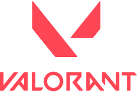

Euphoria is the biennial national student fest organized by the Department of Computer Science and the Computer
Students Association of Rajagiri (CSTAR).
Since its inception, Euphoria has grown to become one of the most anticipated college fests in India, celebrated
every two years with great enthusiasm and participation.
This technical cum cultural extravaganza brings together over 700 students from more than 300 colleges,
fostering a spirit of competition, creativity, and camaraderie.
Euphoria features a wide range of events, from technical challenges like coding competitions, web designing, and
treasure hunts to vibrant cultural activities including dance performances, musical number's, and exhibitions.
The highlight of this year's event is South India's biggest LAN tournament, Respawn, organized in association
with the All Kerala Esports Federation (AKEF), promising an unforgettable experience for all participants.
Euphoria is the biennial national student fest organized by the Department of Computer Science and the
Computer Students Association of Rajagiri (CSTAR).
Since its inception, Euphoria has grown to become one of the most anticipated college fests in India,
celebrated every two years with great enthusiasm and participation.
This technical cum cultural extravaganza brings together over 700 students from more than 300 colleges,
fostering a spirit of competition, creativity, and camaraderie.
Euphoria features a wide range of events, from technical challenges like coding competitions, web designing,
and treasure hunts to vibrant cultural activities including dance performances, musical number's, and
exhibitions.
The highlight of this year's event is South India's biggest LAN tournament, Respawn, organized in
association with the All Kerala Esports Federation (AKEF), promising an unforgettable experience for all
participants.
Rajagiri College of Social Sciences (RCSS) is a beacon of educational excellence, founded by the Carmelites
of Mary Immaculate (CMI) fathers, the first indigenous religious congregation for men in the Syrian Catholic
tradition of Christianity in India. Inspired by the visionary St. Kuriakose Elias Chavara, the CMIs have
established premier institutions across
India, committed to quality education. Located on two scenic campuses in Kochi,
Kerala—the Hill Campus at Kalamassery and the Valley Campus at Kakkanad—RCSS stands out as the flagship of
Rajagiri Vidyapeedam."Rajagiri" translates to "The Hill of the King," symbolizing our commitment to
embodying the virtues of love, truth, and justice. Our motto, “Rajagiri, Relentlessly Towards Excellence,”
reflects our dedication to
continuous improvement and high standards.Accredited with an 'A++' grade by the National Assessment and
Accreditation Council (NAAC), we are recognized for our outstanding education, cutting-edge research, and
active community engagement.

Get ready for an adrenaline-pumping experience at Euphoria 2024 with the Valorant LAN Tournament!
Join South India's biggest gaming showdown, Respawn, in partnership with the All Kerala Esports Federation
(AKEF).
Compete with top teams, enjoy state-of-the-art setups, and witness thrilling matches live.
With epic prizes and the ultimate bragging rights on the line,
this is the event every esports enthusiast has been waiting for. Don't miss the action—Brace for Impact!
Valorant is a free-to-play first-person tactical hero shooter developed and published by Riot Games. The
game's development started in 2014 and was teased under the codename Project A in October 2019.
Team Composition: Each team must rally together a total of 7 players. Choose wisely, as your team will need to
demonstrate skill, strategy, and synergy to claim victory!
Substitutions: Each team is allowed up to 2 substitutes. These players can step in when needed, ensuring that
your team always has a full roster ready to dominate the battlefield.
Code of Conduct: All participants must maintain respectful behavior and good sportsmanship. Any form of
harassment, cheating, or unsportsmanlike conduct will result in immediate disqualification. Remember, it's all
about having fun and competing fairly!
Match Format: Matches will be organized in a bracket format. As the competition heats up, the Semi-Finals and
Finals will intensify with a best-of-3 showdown. Bring your A-game!
Map Selection: Maps will be chosen through a veto process overseen by the tournament officials. Strategic
thinking starts even before the first shot is fired!
Match Schedule: Teams must be ready to play at their scheduled times. If a team fails to show up within 15
minutes of the scheduled time, they will forfeit the match. Don’t keep your opponents waiting!
Streaming and Recording: Matches may be streamed and recorded by the event organizers. By participating, you
agree to be featured in any event-related media. Showcase your skills to the world!
Cheating: The use of any third-party software, hacks, or cheats is strictly prohibited. Violations will result
in a ban from the tournament and all future events. Integrity is everything.
Communication: All teams must use the provided Discord server for communication. Make sure every player has a
functional microphone for clear and efficient teamwork.
Disconnects: If a player disconnects, the game continues. The disconnected player should rejoin as soon as
possible. Adapt and overcome – the game waits for no one!
Fair Play: Exploiting glitches or bugs in the game to gain an advantage is strictly forbidden. Keep the
competition fair and square.
Decision-Making: The event coordinators hold the final say on all decisions. Their rulings are absolute,
ensuring the tournament runs smoothly and fairly.